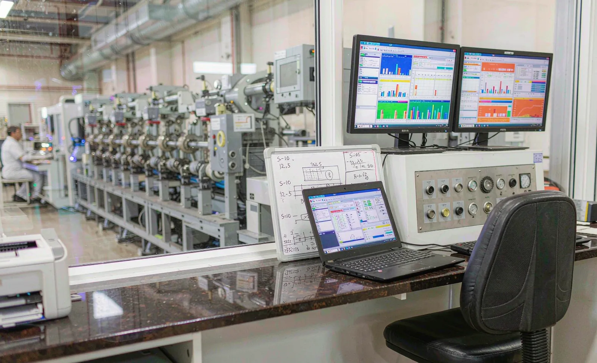
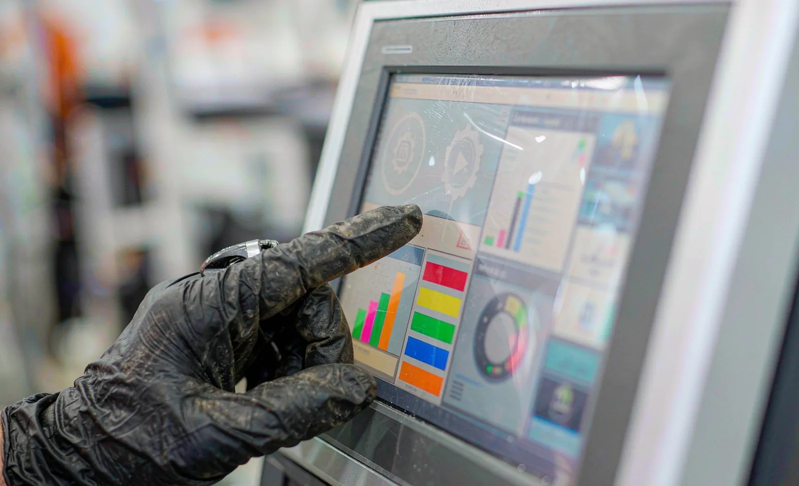

Published September 15, 2026 | By HDPTH Technical Editorial Team

Two slitter rewinders with identical mechanical specifications can differ enormously in effective capacity — not because one cuts better, but because one records and explains its losses and the other does not. Overall equipment effectiveness (OEE) divides machine time into availability, performance and quality, and each factor is only as credible as the data underneath it. A machine that logs every stop with a reason code lets a plant manager see that Tuesday’s losses were splices on one particular parent roll; a machine that only shows “stopped 14 times” keeps the improvement conversation an opinion contest. This guide covers what a buyer should require from the control system before the purchase order, not after commissioning.
Why OEE belongs in the machine specification
OEE is usually presented as a plant or MES project, but the machine supplies the raw signals. If the control system cannot distinguish a production stop from a changeover, or cannot count metres and rolls reliably, no dashboard downstream can repair the gap. Put these capabilities in the RFQ:
- State detection: the PLC automatically classifies running, stopped, fault and changeover states and time-stamps every transition — no operator clocking-in required.
- Production counters: metres produced, rolls completed, parent rolls consumed, and average/peak line speed per shift, held in a buffer that survives power loss.
- Shift reporting: the HMI can display run time, stop time and output per shift, so the numbers are visible on the floor without a server project.
- Performance reference: an agreed nominal speed per recipe, so performance loss is calculated against a contractual number rather than an aspiration.
Downtime reason codes: define the taxonomy with the supplier
Downtime reason codes are the difference between data and diagnosis. The taxonomy belongs to your plant — typically a short list such as web break, splice, roll change, knife/blade change, core or shaft change, waiting for material, waiting for operator, quality hold, cleaning and PM. What the supplier must provide is the mechanism:
- An editable reason-code list in the HMI, changeable by authorized users without a software update.
- A forced prompt on stop — the operator selects a reason before restart, with machine-detected causes (faults, web break sensors) auto-filled and overridable.
- Every stop stored with timestamp, duration, reason, recipe and roll context, for at least several months of production.
- Sub-reason capability where it matters — e.g. web break at unwind versus at slitting — because corrective action lives at that granularity.
Review the reason-code workflow during the controls design review, not at FAT. Changing prompt behavior after the HMI is frozen is expensive.
Line data export: what “open” must mean
Every supplier will say data can be exported. Specify what that means in practice:
| Data | Typical content | What to require |
|---|---|---|
| Production log | Shift/roll summaries, output, stops with reasons | Export to CSV or similar open format, via USB and network, no licence fee |
| Process archive | Tension, speed, diameter, temperature traces | Time-stamped, exportable per roll for traceability and complaint analysis |
| Alarm history | Every alarm with timestamp and cause text | Retain months of history, exportable, searchable |
| Live interface | Current states and values for MES/scada | Documented tag list — names, units, update rates — published to the buyer |
A useful recipe management and line data specification complements this article: recipes and data logs share the same export path, and both should survive a control-system replacement.
MES integration: the practical baseline
For new equipment, OPC UA is the pragmatic requirement for machine-to-MES communication: it is vendor-neutral, encryptable, and supported by both automation platforms and MES products. MQTT is increasingly common for cloud condition-monitoring platforms. Rather than protocol name-dropping, require three things:
- A documented interface specification — the exact variables the machine exposes, their semantics and update rates — delivered as part of the offer.
- A connectivity test against your historian or MES during commissioning, with agreed test cases (shift record arrives, stop with reason arrives, roll report arrives).
- An integration effort estimate in the offer, so “MES-ready” has a price and a scope instead of becoming a change order.

Control-system questions to put to every vendor
- Which stops are detected automatically, and which rely on operator entry?
- How long is production data retained locally, and what happens at power failure?
- Is the data dictionary of the machine interface included in the documentation package?
- Can the reason-code list be edited on site, by whom, and does it require re-validation?
- What is exported when a roll is completed — and can our MES trigger label or roll-ID data back to the machine?
- If we later change MES platforms, is there a fee or limitation on re-integration?
Specify the data with the machine
Send your OEE and MES integration requirements with your material data. HDPTH will state exactly which production, downtime and process data the control system delivers, in which format, and demonstrate it before delivery.
Submit Your Project InquiryVerifying data features at FAT
Data functions fail quietly — they work in the demo and collapse under real shift pressure. Fold them into the machine commissioning checklist and FAT protocol:
- Run the machine through simulated stops and confirm each one appears in the log with the correct reason and timestamp.
- Export a shift of production data in the agreed format and open it in your own tools — before signing acceptance.
- Execute the MES test cases live, including a round trip if roll IDs flow back to the machine.
- Pull the mains during logging and confirm the buffer recovers without loss.
- Review the operator prompt workflow with your own shift leaders for usability.
Planning a line data project?
Compare notes with our guides on inspection systems and tension control, or send your requirement list directly for review.
Contact HDPTHFrequently asked questions
Can OEE tracking be added to an existing slitter rewinder later?
Partly. A retrofit can capture run/stop signals and meter counts from most PLCs, but shift-level loss analysis is only as good as the downtime reasons recorded. If the original control system cannot present editable reason codes to operators, the retrofit will report availability without explaining it — so buyers who expect to upgrade later should still require the data interfaces at purchase.
What is a downtime reason code and who assigns it?
A downtime reason code is a short, plant-defined label — web break, splice, roll change, blade change, waiting for cores — attached to each stop so losses can be grouped and attacked. The plant owns the taxonomy; the machine supplier must make the control system able to present the list, capture the operator’s selection and log it with a timestamp against the stop.
Which protocol should I require for MES integration?
OPC UA is the practical baseline for machine-to-MES exchange on new equipment, because it is vendor-neutral, secure and widely supported by both machine builders and MES platforms. MQTT is common for cloud platforms and condition monitoring. Whatever the choice, require a documented data dictionary — tag names, units, update rates — and a test against your MES at commissioning.
Does automatic stop detection replace operator input?
No. The PLC reliably knows when the line stopped and often why at the sensor level, but causes such as waiting for an operator, material shortage or quality hold need human classification. The best systems auto-populate machine-detected causes and ask the operator only to confirm or correct, keeping the downtime log accurate without adding burden.
Who owns the production data my slitter generates?
Ownership should be contractual. Buyers should require that all process, production and diagnostic data generated on their line belongs to them, is exportable in open formats without licence fees, and that any supplier cloud service allows full retrieval and deletion. Machines should run with local functionality intact even if a remote service subscription ends.
Sources
- OPC Foundation: OPC UA specifications for machine-to-system communication
- ISA-95 / IEC 62264: enterprise–control system integration models
- NIST Cybersecurity Framework: guidance relevant to connected production systems
- ISO 22400-2: Key performance indicators for manufacturing operations management (OEE definitions)